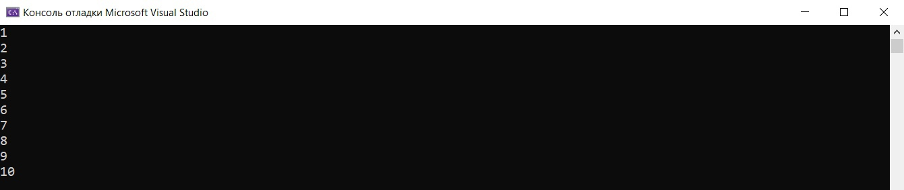

Навигация по странице:
1. Ввод с помощью scanf()
2. Важно про функцию scanf()
3. Ввод с помощью scanf_s()
4. Что возвращает scanf_s()
5. Вывод с помощью printf
6. Основные управляющие символы
Ввод и вывод
Ввод и вывод информации осуществляется через функции стандартной библиотеки stdio.h.
scanf() — для ввода информации
printf() — для вывода информации
Ввод с помощью scanf()
Общая форма записи функции scanf():
scanf ("CтрокаФорматов", &arg1);
Форматы нужны для того, чтобы указывать вид, в котором информация будет введена или выведена. К каждому элементу нужно соответственно подставить его формат. Форматы:
%d — целое число типа int со знаком в десятичной системе счисления;
%u — целое число типа unsigned int;
%hd — целое число типа short со знаком в десятичной системе счисления;
%hu — целое число типа unsigned short;
%ld — целое число типа long int со знаком в десятичной системе счисления;
%lu — целое число типа unsigned long int;
%f — вещественный формат (числа с плавающей точкой типа float);
%lf — вещественный формат двойной точности (числа с плавающей точкой типа double);
%e — вещественный формат в экспоненциальной форме (числа с плавающей точкой типа float в экспоненциальной форме);
%c — символьный формат;
%s — строковый формат.
Важно!
Функция scanf() является функцией незащищенного ввода, т.к. появилась она в ранних версиях языка Си. Поэтому, чтобы разрешить работу данной функции в современных компиляторах, необходимо в начало программы добавить строчку:
#define _CRT_SECURE_NO_WARNINGS
Пример ввода:
1
2
3
4
5
6
7
8
9
10
11
12
#define _CRT_SECURE_NO_WARNINGS #include<stdio.h> int main() { int a, c; float b, d; char A[100]; scanf("%i", &a); // вводим число типа int scanf("%f", &b); // вводим число типа float scanf("%s", &A); // вводим строку scanf("%i%f", &c, &d); // ввод двух переменыых return 0; }
Ввод с помощью scanf_s()
Также можно воспользоваться функцией защищенного ввода scanf_s(). Она отлична от scanf() тем, что не вызывает перегрузки буфера. Если при вводе строки мы превысим размер массива символов, то scanf() будет записывать оставшиеся символы в память, которая не была выделена под этот массив. Поэтому scanf_s проверяет, что пользовательский ввод поместится в заданном пространстве памяти. Пример:
1
2
3
4
5
6
7
8
#include<stdio.h> #include<stdlib.h> int main() { char s[10]; scanf_s("%s", &s, sizeof(s)); printf("%s", s); return 0; }
При этом размер буфера можно брать любого размера, но нужно помнить, что:
1. Если размер буфера равен или меньше размера массива, то ввод большего или равного размеру буфера ничего не даст.
2. Если размер буфера больше размера массива, то программа выдаст ошибку.
В остальных случаях параметры остаются такие же, как и в scanf(), пример:
1
2
3
4
5
6
7
8
9
#include<stdio.h> #include<stdlib.h> int main() { int n; float f; scanf_s("%i%f", &n, &f); printf("%i %f", n, f); return 0; }
Что возвращает scanf_s()
Как и любая функция, scanf_s() возвращает значение, равное количеству успешно присвоенных элементов. Давайте рассмотрим пример:
1
2
3
4
5
6
7
8
#include<stdio.h> #include<stdlib.h> int main() { int n1, n2; int r = scanf_s("%i%i", &n1, &n2); printf("%i", r); return 0; }
Например, при вводе символа и числа, программы выведет 1, так как успешно было записано только число.
Чтобы проверить ввод на входные данные, нужно поставить условие, что scanf_s() успешно считал все символы, например:
1
2
3
4
5
6
7
8
9
10
#include<stdio.h> #include<stdlib.h> int main() { int n1, n2, n3; if (scanf_s("%i%i%i", &n1, &n2, &n3) != 3) printf("false"); else printf("true"); return 0; }
Функция возвратит EOF, если еще до начала ввода произошел сбой.
Вывод с помощью printf()
Общая форма записи функции printf():
printf ("CтрокаФорматов", arg1);
В отличие от scanf() символ амперсанд '&' не нужно ставить.
Строка форматов аналогична функции printf().
Для корректировки вывода используются специальные управляющие символы. Управляющие символы не выводятся на экран, а управляют расположением выводимых символов. Отличительной чертой управляющего символа является наличие обратного слэша ' \' перед ним.
Основные управляющие символы:
'\n' — перевод строки;
'\t' — горизонтальная табуляция;
'\v' — вертикальная табуляция;
'\b' — возврат на символ;
'\r' — возврат на начало строки;
'\a' — звуковой сигнал.
Так же с помощью printf() можно выводить слова, как показано далее.
Пример вывода с управляющим символом '\n':
1
2
3
4
5
6
7
8
9
10
11
#define _CRT_SECURE_NO_WARNINGS #include<stdio.h> #include <locale.h> // библиотека для подключения русского языка int main() { int x1, x2; setlocale(LC_ALL, "Rus"); // подключение русского языка printf("введите два числа\n"); // выводим надпись scanf("%i%i", &x1, &x2); // вводим число типа int printf(" число 1 = %i \n число 2 = %i", x1, x2); // выводим надписи и числа return 0; }
Результат работы программы:
Code.C
© Copyright Павел Калашников 2021
обратная связь code.c04@mail.ru